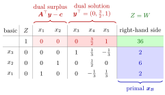

Dual Solution from the Simplex Tableau¶
Proposition¶
Let the primal linear program be in standard form, subject to , with , with slack variables , and let its dual be subject to , . For a basis with basis matrix and objective coefficients of the basic variables, put
Then the objective row of the simplex tableau of is
| right-hand side | |||
|---|---|---|---|
that is:
- the reduced costs of the slack variables are the values of the dual variables;
- the reduced costs of the structural variables are , the values of the dual surplus variables;
- the right-hand side is both the primal value of the basic solution and the dual value of .
is feasible for the dual if and only if all reduced costs are nonnegative. Hence, if the basic solution is feasible and all reduced costs are nonnegative, then is optimal for the primal linear program, is optimal for the dual linear program, and .
Interpretation¶
Every simplex tableau carries a candidate dual solution in its objective row, under the slack columns. Testing the primal tableau for optimality is the same as testing that candidate for dual feasibility, so solving the primal linear program gives the dual solution for free.

The figure shows Example 1 below. In the objective row of the final tableau, the red entries under the slack columns are the dual solution , the lighter red entries under are the dual surpluses, both , and the green right-hand side is both and . The blue column holds the primal basic solution , , . No red entry is negative, so is dual feasible and both solutions are optimal.
The three readings come straight from the matrix form. The column of slack is with cost , so its reduced cost is . A structural column gives , the amount by which dual constraint is oversatisfied. And the right-hand side is . Since holds at every basis, the only thing missing for optimality is feasibility on both sides; weak duality then makes both optimal. Equal values of an infeasible pair prove nothing (Example 2 below).
The statement uses the standard form: the slack columns must form , and the dual is the standard-form dual above. For one basis, a basic has and a nonbasic one has , and likewise for the slacks, so and always satisfy complementary slackness; at an optimal tableau this is the complementary slackness theorem.
The same reading answers which problem to solve. Since the dual of the dual is the primal, so solving either one solves both. The work per iteration grows mainly with the number of constraints, through the inverse of the basis matrix, so with the dual, with constraints, is usually cheaper per iteration. In OR Modelling the optimal appear as shadow prices; sensitivity analysis, for example right-hand side ranging, makes this precise.
Key Results¶
- In the tableau of any basis, the objective row contains under the slack variables, under the structural variables and as right-hand side.
- A negative entry in either block means that is infeasible for the dual and that the tableau does not show the primal solution to be optimal.
- At an optimal tableau, is feasible for the dual and , so both are optimal by weak duality; with Bland's rule, which guarantees that the simplex algorithm terminates, this gives a short proof of strong duality.
- The basic solution and of the same basis always satisfy the complementary slackness conditions.
- Since the dual of the dual is the primal, one may solve whichever of primal and dual is easier; per iteration, the problem with fewer constraints is usually cheaper, though the total effort also depends on the number of iterations.
Examples¶
1. Reading off a dual optimum. The primal subject to , , , , with slacks , has the dual subject to , , . The final simplex tableau, reached from the slack basis in two iterations, has the objective row (structural columns, slack columns, right-hand side), so . Both dual constraints hold with equality, and , matching the structural reduced costs , and . The first resource has price , in line with its slack .
2. Equal values, but not optimal. In the same linear program, after the first simplex iteration from the slack basis, the objective row is , so and . The reduced cost of is the dual surplus : the first dual constraint is violated. Since is not dual feasible, certifies nothing, and indeed the optimum is .
3. Prices of raw materials. Five products use three raw materials with capacities , and : subject to , , , , with slacks . For the basis the inverse basis matrix is the matrix in the display below, which yields and
The dual surpluses are for , all nonnegative, so the basis is optimal: , , with . Raw material 3 is not used up () and has price .
4. Solving the dual instead. The linear program subject to , , , , , , has six constraints and six variables, so counting constraints does not decide. The difference lies in the start: in standard form all six right-hand sides are negative, so the primal needs six artificial variables, whereas the dual, subject to , , , , , , , starts from its slack basis. Solving the dual gives with , and under the slack columns of its final tableau an optimal primal solution can be read off. Depending on the tie-breaking in the ratio test this is for instance , which satisfies all six constraints ( against ) and has value ; the primal has several optimal solutions, such as .
Prerequisites¶
Related Concepts¶
- Strong Duality
- Dual of the Dual
- Complementary Slackness (Linear Programming)
- Big-M Method
- Right-Hand-Side Ranging
- Shadow Price in Linear Programming
- Surplus Variable
Sources¶
- Math VI: Convexity and Optimization · Week 6
- H. E. Nusse and M. Dienstknecht, Math VI: Convexity and Optimization, lecture notes 2026–2027, Section 6.4
Aliases: reading the dual from the simplex tableau, dual values in the objective row, simplex multipliers Keywords: \boldsymbol{y}^{\top}=\boldsymbol{c}{\mathcal{B}}^{\top}\boldsymbol{B}^{-1}, \boldsymbol{A}^{\top}\boldsymbol{y}-\boldsymbol{c}, \boldsymbol{y}^{\top}\boldsymbol{b}=\boldsymbol{c}, dual surplus variables, solve the easier of primal and dual Symbols: element of, real numbers }}^{\top}\boldsymbol{B}^{-1}\boldsymbol{b
Last updated: 10 November 2026 16:43
Dual Solution from the Simplex TableauAdding or Removing a VariableChanging a Technology CoefficientRight-Hand-Side RangingSimplex Tableau in Matrix FormDual Linear ProgramWeak DualityNonoptimality and Reduced CostsStrong DualityDual of the DualComplementary Slackness (Linear Programming)Big-M MethodShadow Price in Linear ProgrammingSurplus Variable